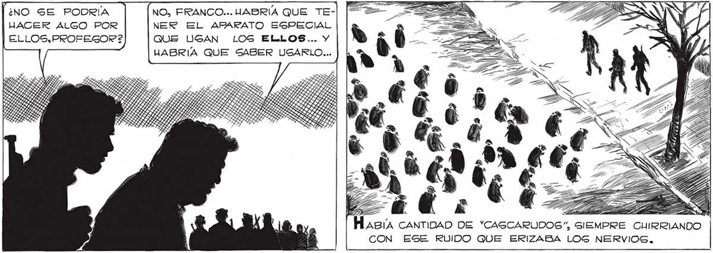
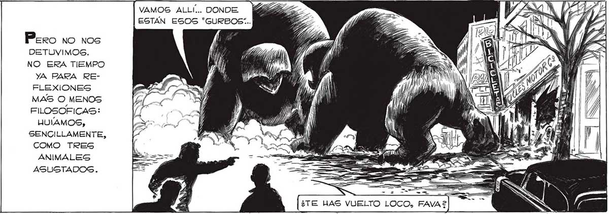

¿NO GON LOS “*GURBOG” SUELTOS...¡EL PELIGRO GON LOG COHETES ATOMICOS QUE VIENEN DEL NORTE! ¡YA NO EXISTE MAS LA BARRERA PRO- TECTORA QUE HABIAN TENDIDO LOS ELLOS! ABIÍA DICHO BIEN. DESAPARECIDOS LO LA BARRERA QUE NEUTRALIZABA LOS COHETES QUE VENÍAN DEL NORTE. EN CUALQUIER MOMENTO PODIA ESTALLAR UNA CABEZA ATOMICA. ¿NO SE PODRÍA HACER ALGO POR ELLOS, PROFEGOR? TAR UTA LO SAR OSOS SOS DOTOS A S SOS Vaca LA MIRADA.A LA ESPERA DE ALGUNA ORDEN QUE NO VENDRIA, ALLÍ ESTABAN,MURIENDOSE SIN SABERLO. ElOIOIO... ATHESA... Pero no nos DETUVIMOS. NO ERA TIEMPO yA PARA REFLEXIONES MAS O MENOS FILOSOFICAS: HULAMOS, SENCILLAMENTE, COMO TRES ANIMALES ASUGTADOGS. Taueién. A CADA TANTO, PASAMOS JUNTO A ALGÚN “MANO” MURIENDOGE. ¡NO TAN LIGERO, JUAN! RECUERDA QUE TENEMOS QUE CORRER MUCHO..NO CANGARSE ANTES DE TIEMPO... Reouss ALGO EL TREN. PASAMOS JUNTO . A UN PELOTÓN DE HOMBRES-ROBOTOS... NO, FRANCO... JABRIA QUE TENER EL APARATO ESPECIAL QUE USAN LOS ELLOS... Y HABRIA QUE SABER USARLO... LS LIA CORILLO LAA ELALR LSZRIZILDRZ tt RABIA 2% CHIRRIANDO VAMOS ALLÍ... DONDE ESTAN ESOS *"GURBOS:.. ¿TE HAS VUELTO LOCO, FAVA?S

